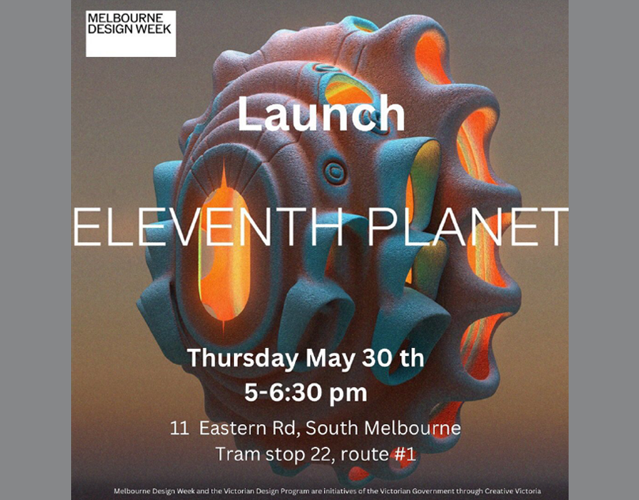
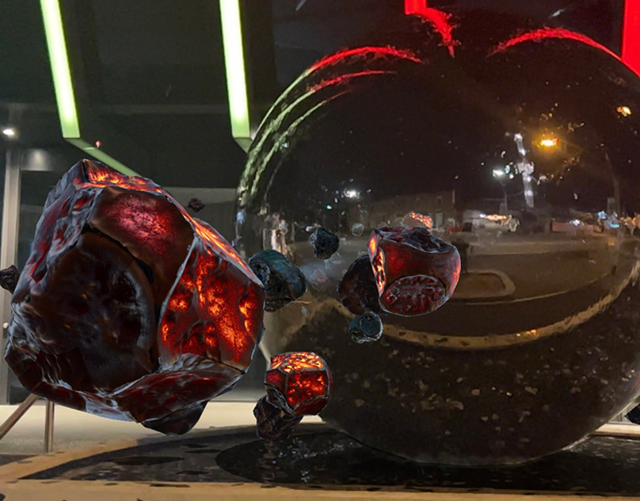
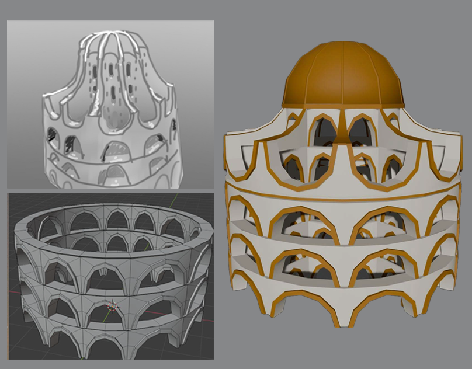
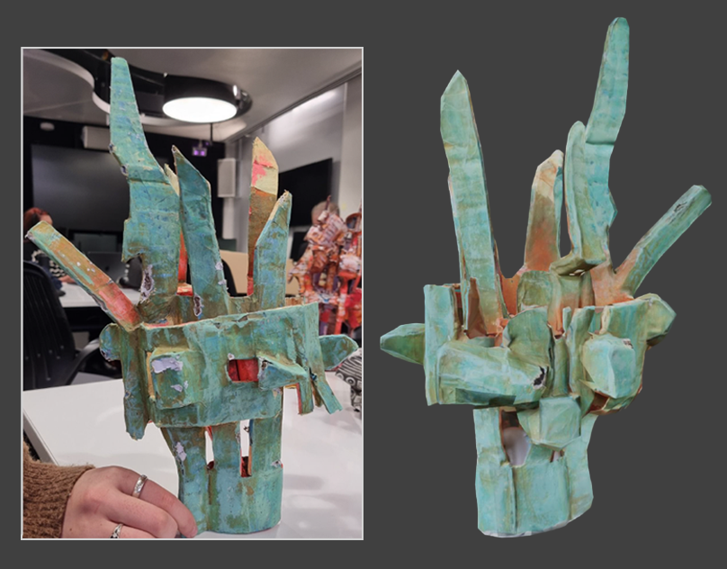
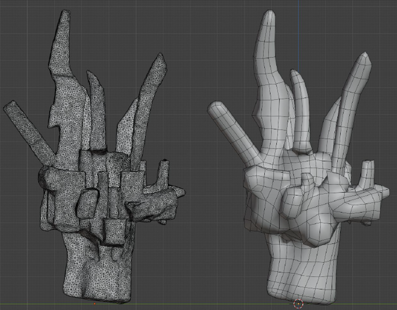

Eleventh Planet
Eleventh Planet is an interactive hybrid AR sculpture permanently installed in Melbourne.
A steel sphere acts as a fountain set within a surrounding mosaic water pool. The mosaics serve as tracking features for smartphones to engage with the AR experience.
I worked on this exhibit underneath Dr. John Power over the course of a month.
I created multiple 3d models in
Blender based on his sketches for use in Unity. I also used photogrammetry to scan his
papier-mâché models and retopologize them in Blender.
The design criteria for this project was to create assets for themed worlds that would surround the viewer in AR. Since this project was
developed for smartphones with limited processing power and many objects would be rendered simultaneously, I had to keep all models low poly with simple textures and materials.
This was my first experience with photogrammetry so retopologizing and cleaning up artifacts on such a complex model was a particularly challenging task. I was given a very low tri budget since the model
needed to run efficiently on mobile devices so I spent a lot of time iterating reducing the polygon count to as low as possible while maintaining the visual quality.




